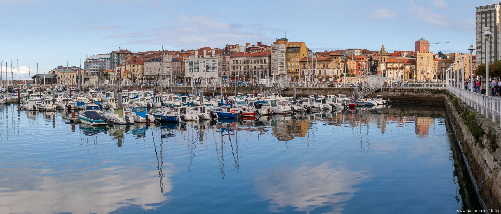

Por favor, gira tu dispositivo
Esta imagen se visualiza mejor en modo horizontal
Por favor, gira tu dispositivo
Esta imagen se visualiza mejor en modo vertical
üè†
⛶

puerto
panoramica
gijón
219
panoramica composicion